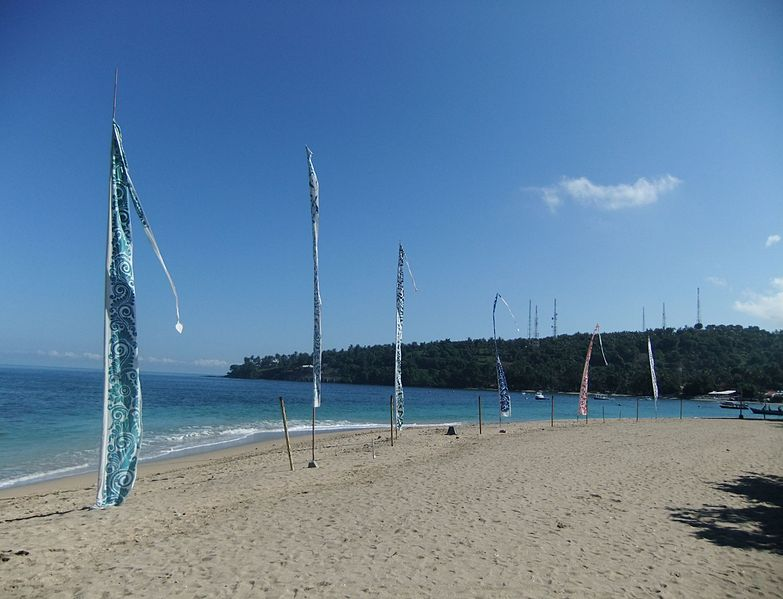
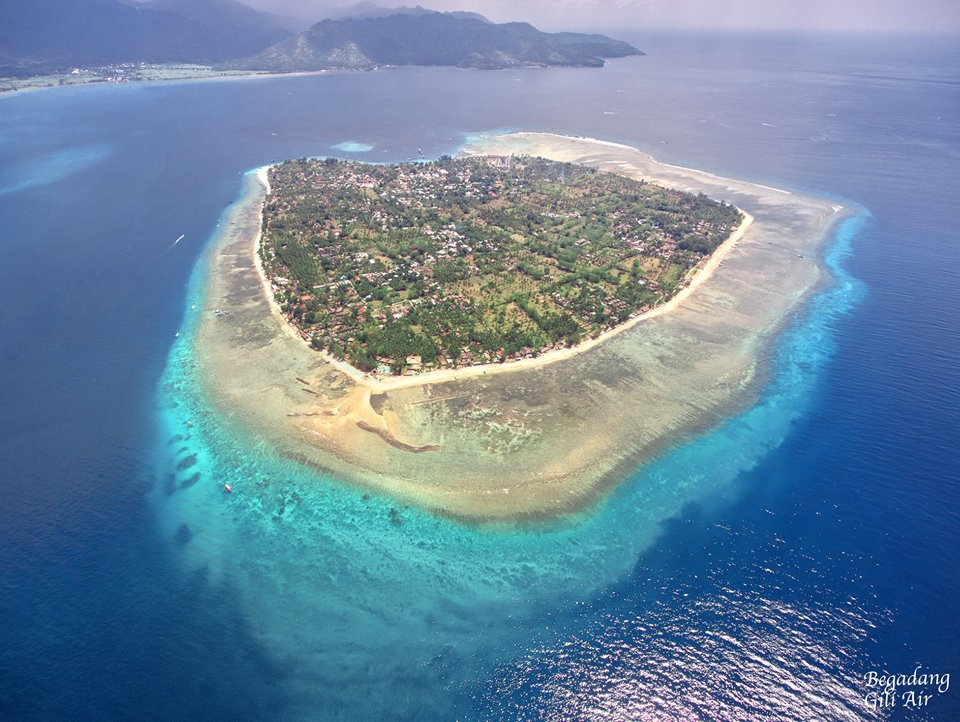
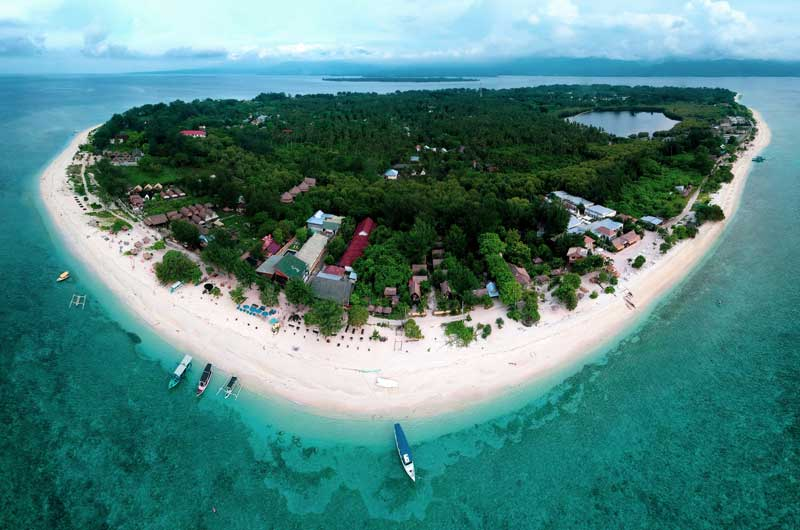
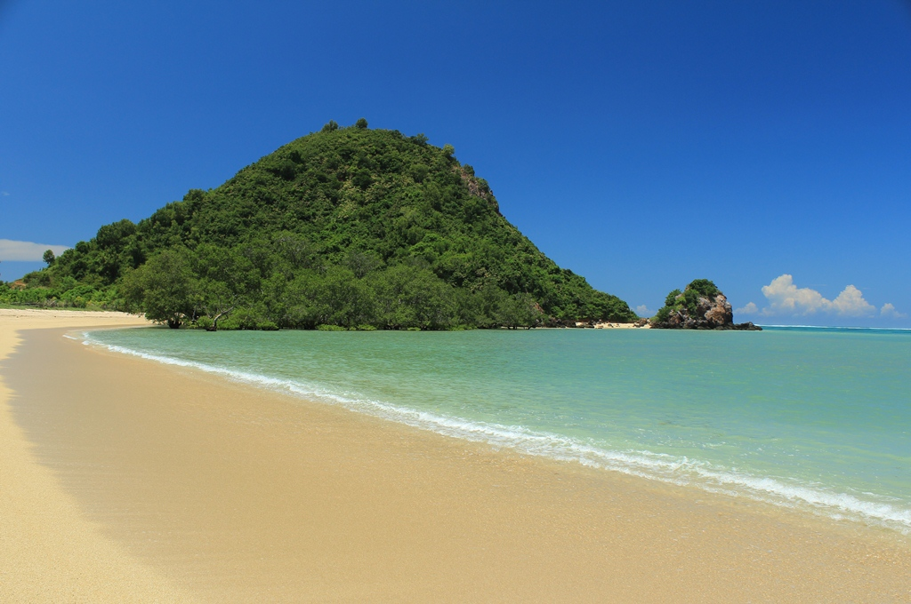

Lombok dalam banyak hal mirip dengan Bali, dan pada dasawarsa tahun 1990-an mulai dikenal wisatawan mancanegara. Namun dengan munculnya krisis moneter yang melanda Indonesia pada akhir tahun 1997 dan krisis-krisis lain yang menyertainya, potensi pariwisata agak terlantarkan.
Lalu pada awal tahun 2000 terjadi kerusuhan antar-etnis dan antar agama di seluruh Lombok sehingga terjadi pengungsian besar-besaran kaum minoritas.
Mereka terutama mengungsi ke pulau Bali. Namun selang beberapa lama kemudian situasi sudah menjadi kondusif dan mereka sudah kembali.
Pada tahun 2007 sektor pariwisata adalah satu-satunya sektor di Lombok yang berkembang.
Wisata Alam
Pantai Senggigi

Pantai Senggigi adalah tempat pariwisata yang terkenal di Lombok.
Letaknya di sebelah barat pesisir Pulau Lombok. Pantai Senggigi memang tidak sebesar Pantai Kuta di Bali, tetapi seketika kita berada di sini akan merasa seperti berada di Pantai Kuta, Bali.
Memasuki area pantai Senggigi, wisatawan seta merta disapa oleh lembutnya angin semilir yang menenangkan. Pesisir pantainya masih asri, walaupun masih ada sampah dedaunan yang masih berserakan karena jarang dibersihkan. Pemandangan bawah lautnya sangat indah, dan wisatawan bisa melakukan selam permukaan (snorkeling) sepuasnya karena ombaknya tidak terlalu besar.
Terumbu karangnya menjulang ketengah menyebabkan ombak besarnya pecah di tengah.
Tersedia juga hotel-hotel dengan harga yang bervariasi, dari yang mahal sampai hotel yang berharga ekonomis.
Gili Air

Gili Air merupakan salah satu dari tiga pulau gili terkenal di Lombok, yaitu Gili Trawangan, dan Gili Meno.
Ketiga pulau ini terkenal dengan keindahan pantainya, maka tak heran apabila Gili Air menjadi salah satu destinasi wisata favorit di Lombok.
Dari ketiga pulau gili yang telah disebutkan diatas, Gili Air merupakan pulau yang letaknya paling dekat dengan pulau Lombok.Gili Air, Gili Meno, dan Gili Trawangan berada di kawasan barat pantai Lombok, serta mampu menampilkan gambaran keindahan pantai-pantai yang berada di Lombok.
Lokasi Gili Air tepatnya teletak di Desa Gili indah, Kecamatan Pemenang, Kabupaten Lombok Utara.
Berkunjung ke Gili Air wisatawan dapat menjelajahi beberapa titik untuk menikmati keanekaragaman hayati laut Indonesia.
Diantaranya pengunjung dapat melihat spot kuda laut, kura-kura, beragam ikan dengan berbagai warna, serta keanekaragaman penghuni laut lainnya.
Masyarakat setempat mnyebut GIli Air dengan nama "Tengaq Aiq" yang berarti ditengha-tengah laut. Mayoritas penduduk asli Gili Air berasal dari suku bugis dan suku sasak, dan mereka bermata pencaharian utama sebagai nelayan, pedagang, dan pemandu wisata.
Mayoritas pengunjung GIli Air merupaka wisatawan mancanegara, seperti dari negara Inggris, Prancis, Australia, Belanda, Italia, maupun negara-negara lainnya. Gili Air biasanya ramai dikunjungi wisatawan pada bulan Juli hingga Agustus.
Gili Meno

Gili Meno adalah salah satu dari tiga pulau kecil, selain Gili Trawangan dan Gili Air, yang menjadi kawasan wisata bahari.
Tempat ini dapat dicapai dari Kota Mataram sekitar 45 menit berkendaraan darat dengan perjalanan melewati Pantai Senggigi yang berlatarkan pemandangan pantai yang menakjubkan serta hutan lindung.
Di sini terdapat taman burung yang mempunyai koleksi burung-burung langka dari Indonesia dan mancanegara. Pasirnya putih dan masih alami. Di Gili Meno kendaraan bermotor sangat dibatasi, demikian pula penggunaan listrik.
Alternatif kendaraan hanya terdapat sepeda dan cidomo.
Di Gili ini anda bisa snorkeling atau berenang sembari menikmati karang dan biodiversitasnya.
Di Pulau ini menyajikan kicauan-kicauan burung yang mampu menenangkan hati dan pikiran anda.
Jika tidak puas hanya dengan mendengar kicauannya, anda juga bisa memegangnya secara langsung dengan mengunjungi Bird Park yang terletak di Bird Pak Homestay.
Gili Trawangan

Gili Trawangan adalah yang terbesar dari ketiga pulau kecil atau gili yang terdapat di sebelah barat laut Lombok.
Trawangan juga satu-satunya gili yang ketinggiannya di atas permukaan laut cukup signifikan. Dengan panjang 3 km dan lebar 2 km, Trawangan berpopulasi sekitar 800 jiwa.
Di antara ketiga gili tersebut, Trawangan memiliki fasilitas untuk wisatawan yang paling beragam; kedai "Tîr na Nôg" mengklaim bahwa Trawangan adalah pulau terkecil di dunia yang ada bar Irlandia-nya.
Bagian paling padat penduduk adalah sebelah timur pulau ini.
Trawangan punya nuansa "pesta" lebih daripada Gili Meno dan Gili Air, karena banyaknya pesta sepanjang malam yang setiap malamnya dirotasi acaranya oleh beberapa tempat keramaian.
Aktivitas yang populer dilakukan para wisatawan di Trawangan adalah scuba diving (dengan sertifikasi PADI), snorkeling (di pantai sebelah timur laut), bermain kayak, dan berselancar.
Ada juga beberapa tempat bagi para wisatawan belajar berkuda mengelilingi pulau.
Di Gili Trawangan (begitu juga di dua gili yang lain), tidak terdapat kendaraan bermotor, karena tidak diizinkan oleh aturan lokal.
Sarana transportasi yang lazim adalah sepeda (disewakan oleh masyarakat setempat untuk para wisatawan) dan cidomo, kereta kuda sederhana yang umum dijumpai di Lombok.
Untuk bepergian ke dan dari ketiga gili itu, penduduk biasanya menggunakan kapal bermotor dan speedboat.
Kelebihan Gili Trawangan dibandingkan dengan pantai lain adalah kita dapat menikmati sunset dan juga sunrise sekaligus di pantai ini.
Hal ini terjadi karena Gili Trawangan memiliki pantai yang menghadap timur dan menghadap barat, dan jaraknya tidak terlalu jauh.
Sehingga baik sunrise maupun sunset dapat kita nikmati di pantai ini.
Di Gili Trawangan juga kita dapat melihat kesenian bela diri tradisional yang bernama presean atau stick fighting yang biasanya dipertontonkan disekitar pasar seni Gili Trawangan.
Kegiatan paling favorit dari para wisatawan di Gili ini yaitu Scuba Diving, Snorkeling, bermain kayak, dan berselancar.
Gunung Rinjani

Gunung Rinjani adalah gunung yang berlokasi di Pulau Lombok, Nusa Tenggara Barat.
Gunung yang merupakan gunung berapi kedua tertinggi di Indonesia dengan ketinggian 3.726 mdpl serta terletak pada lintang 8º25' LS dan 116º28' BT ini merupakan gunung favorit bagi pendaki Indonesia karena keindahan pemandangannya.
Gunung ini merupakan bagian dari Taman Nasional Gunung Rinjani yang memiliki luas sekitar 41.330 ha dan ini akan diusulkan penambahannya sehingga menjadi 76.000 ha ke arah barat dan timur.
Secara administratif gunung ini berada dalam wilayah tiga kabupaten: Lombok Timur, Lombok Tengah, dan Lombok Utara.
Pantai Kuta, Lombok

Pantai Kuta, Lombok adalah tempat wisata di Pulau Lombok, Provinsi Nusa Tenggara Barat, Indonesia. Pantai dengan pasir berwarna putih seperti buliran merica ini terletak di Kawasan Ekonomi Khusus Mandalika di Desa Kuta. Pantai Kuta mulai dikenal dan
dikembangkan sebagai destinasi wisata pada mulanya oleh PT. Rajawali Indonesia (BUMN, sekarang jadi ITDC) pada tahun 1970an.
Pantai Kuta (Kute, ejaan lokal) memang terkenal dengan pasir putihnya yang berbeda dengan kebanyakan pantai di Indonesia.
Pasir berwarna putih bak merica dengan garis pantai yang panjang menjadikan Kuta sebagai idola bagi para wisatawan domestik dan mancanegara. Terdapat sebuah upacara kebudayaan terbesar di Pulau Lombok dan dilakukan satu kali dalam setahun upacara Sasak di desa ini.
Ini adalah upacara Bau Nyale. Dalam upacara ini masyarakat dan wisatawan mencari dan berburu cacing Nyale di laut. Menurut legenda, dahulunya ada seorang putri, bernama Putri Mandalika, yang sangat cantik jelita, banyak pangeran dan pemuda yang ingin menikah dengannya. Karena kebijakan sang putri dan tidak menginginkan terjadi pertumpahan darah di antara kerajaan.
maka ia memutuskan moksa (hilang) dan terlihat seperti terjun ke laut. Namun sebelumnya sang putri bertitah, "Wahai rakyatku, jika engkau ingin menemui dan menjumpaiku. Carilah aku pada tanggal 20 bulan sepuluh (penanggalan suku Sasak) di sepanjang pantai ini setiap tahun", ujar sang putri.
Hingga sekarang, ritual adat ini masih dilakukan dan dikemas sebagai atraksi wisata yang sangat menarik bagi wisatawan.
Wujud cacing laut (nyalè) ini dipercaya sebagai reinkarnasi sang putri dengan asas keadilan. Semua rakyat bisa mendapatkannya tanpa perlu berperang memperebutkan fisik sang putri. Event Bau Nyale ini biasanya di gelar antara bulan Februari - Maret setiap tahunnya yang berlokasi di sepanjang semenanjung Pantai Kuta Lombok Tengah.